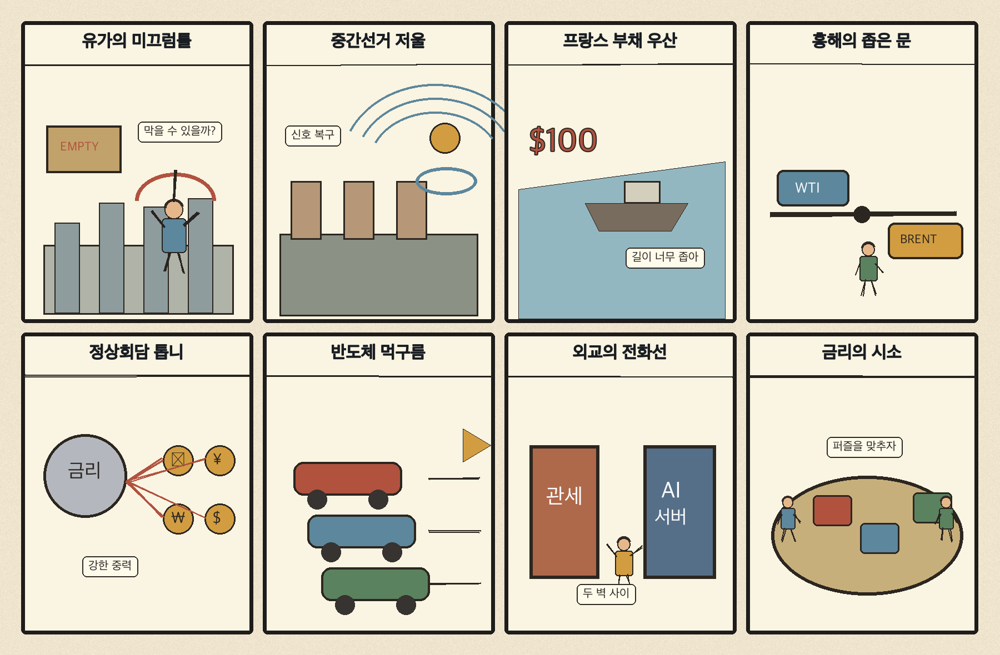
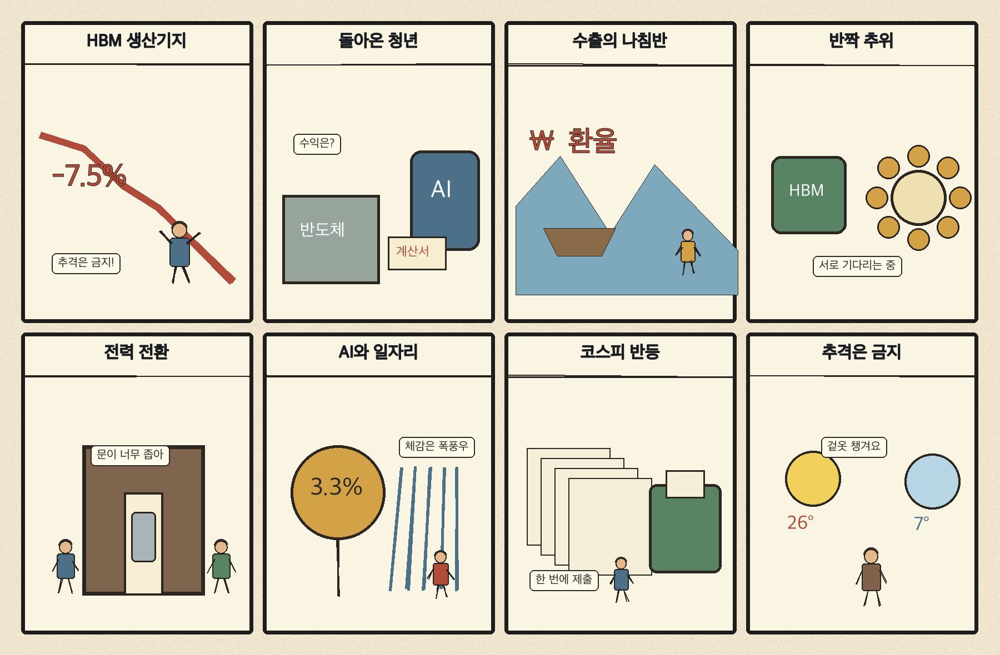

01
월마트 · 124.35→127.69달러 · +2.69%
내용요약 시가 대비 +2.69%로 조사군 최상위였습니다.
예상여파 필수소비 유통의 방어력이 성장주 약세 국면에서 부각됐습니다.
MORNING_BRIEFING_20261103
작성 시각: 2026-11-03 06:33 KST · 직전 미국 정규장과 2026-11-03 KST 당일 공개 기사 기준
11월 2일 뉴욕증시는 다우 +0.41%, S&P 500 -0.51%, 나스닥 -1.07%로 혼조 마감했습니다. 국제유가 급락이 물가 부담을 낮췄지만 반도체 약세와 AI 투자 부담이 기술주를 눌렀습니다. 전일 KOSPI는 +2.24% 반등했으나 오늘은 미국 반도체 낙폭과 중간선거 불확실성을 함께 확인해야 합니다.
| 지수 | 종가 | 등락률 | 한국 증시 시사점 |
|---|---|---|---|
| 다우존스 | 51,983.98 | +0.41% | 경기민감주 방어 |
| S&P 500 | 7,541.40 | -0.51% | 반도체·성장주 부담 |
| 나스닥 종합 | 25,164.32 | -1.07% | 반도체·성장주 부담 |
유가 하락에도 반도체 매도가 기술주를 압박했습니다.
전일 5,859.08로 반등했고 시가 대비 +3.93%였습니다.
미·이란 외교 기대가 수입물가 부담을 낮췄습니다.
관세·금리·AI 정책의 변동성을 경계합니다.
11월 2일 보고서는 수급·컨센서스·30건 이상 유사 조건 표본을 모두 확보하지 못해 공식 추천을 내지 않았습니다. 사후에 종목을 추가하지 않습니다.
| 시장 | 종가 | 등락률 | 기준 |
|---|---|---|---|
| KOSPI | 5,859.08 | +2.24% | 11월 2일 · 시가 대비 +3.93% |
| KOSDAQ | 734.36 | +1.38% | 11월 2일 · 시가 대비 +2.50% |
| 다우존스 | 51,983.98 | +0.41% | 미국 11월 2일 정규장 |
| S&P 500 | 7,541.40 | -0.51% | 미국 11월 2일 정규장 |
| 나스닥 종합 | 25,164.32 | -1.07% | 미국 11월 2일 정규장 |
월마트 +2.69%, 홈디포 +2.12%로 방어했습니다.
액센츄어 +2.05%, 아마존 +1.05%였습니다.
마벨 -10.67%, AMD -8.58%, 인텔 -8.30%였습니다.
슈퍼마이크로컴퓨터 -9.00%, 마이크론 -6.41%였습니다.
내용요약 시가 대비 +2.69%로 조사군 최상위였습니다.
예상여파 필수소비 유통의 방어력이 성장주 약세 국면에서 부각됐습니다.
내용요약 시가 대비 +2.12%로 상승했습니다.
예상여파 주택·소비 관련주의 상대 강세가 다우 방어에 기여했습니다.
내용요약 시가 대비 -10.67%로 조사군 최대 낙폭이었습니다.
예상여파 AI 인프라 반도체의 밸류에이션 부담이 국내 관련주 심리에 전이될 수 있습니다.
내용요약 시가 대비 -9.00%로 급락했습니다.
예상여파 AI 서버 투자 수익성 우려와 높은 변동성을 보여줍니다.
내용요약 시가 대비 -8.58% 하락했습니다.
예상여파 미국 AI칩 약세는 국내 HBM·반도체 장비주의 장 초반 변동성을 키울 수 있습니다.
유가 급락은 원화와 항공·운송·화학의 비용 부담을 낮추는 요인이지만, 나스닥 -1.07%와 마벨·AMD·인텔의 큰 낙폭은 국내 반도체·AI 공급망의 장 초반 부담입니다. 전일 KOSPI가 시가 대비 +3.93% 반등한 뒤라 추격보다 외국인 현·선물 수급과 삼성전자·SK하이닉스의 낙폭 방어를 먼저 확인해야 합니다. 미국 중간선거 결과와 관세 정책도 변동성 요인입니다.
오늘은 추천 없음 — 현금 관망
전일까지의 외국인·기관 수급, 컨센서스 변화와 30건 이상 유사 조건 표본을 함께 확보해 종합점수 75점·상승확률 60%·예상 손익비 1.5를 모두 검증한 종목이 없습니다. 미국 반도체 급락과 중간선거 이벤트도 겹쳤습니다.
관심 연결종목 HBM·원전·데이터센터 전력망은 관찰 대상일 뿐 매수 추천이 아닙니다. 장전 급등과 장 초반 갭 상승 종목은 추격매수를 금지합니다.
관세·AI 규제·재정정책의 추진력 변화를 확인합니다.
마벨·AMD 급락이 국내 HBM과 장비주로 번지는지 봅니다.
급락 지속 여부와 원·달러 환율 반응을 점검합니다.
전일 반등 뒤 현·선물 동반 매수가 이어지는지 확인합니다.
핵심 요약: AI 경쟁의 병목이 모델에서 전력·메모리·패키징과 실제 환경을 이해하는 세계 모델로 옮겨가고 있습니다. 한국은 HBM과 제조 기반이 강점이지만 전력망과 인프라 실증 속도가 중요합니다.
내용요약 원전 가동·건설 확대가 반도체 공장 6곳과 AI 데이터센터 19곳의 대규모 전력 수요를 뒷받침한다는 당일 보도입니다.
예상여파 AI 인프라 경쟁이 칩 성능을 넘어 발전원·송전망·지역 수용성 확보 경쟁으로 확대될 수 있습니다.
내용요약 구글의 우주 AI 추론 성공에 이어 한국이 2028년 소형 우주 데이터센터 실증을 추진한다는 보도입니다.
예상여파 우주 통신·냉각·전력 기술의 실증이 위성 데이터 처리와 국산 부품 생태계의 새 수요로 이어질 수 있습니다.
내용요약 행동 세계 모델을 개발하는 42AI가 6,250만달러 규모 초기 투자를 유치했다는 당일 보도입니다.
예상여파 텍스트 생성 이후 실제 환경을 예측·행동하는 피지컬 AI 경쟁이 로봇과 시뮬레이션 투자로 확장될 전망입니다.
내용요약 한국이 HBM 생산과 AI 데이터센터를 연결한 핵심 거점으로 부상한다는 당일 기사입니다.
예상여파 메모리 공급력은 강점이지만 전력망·패키징·냉각 병목 해결 속도가 투자 실현의 관건입니다.
내용요약 엔비디아가 서울에서 AI 행사를 열고 삼성·SK·LG 등 20개사와 생태계 협력을 소개한다는 보도입니다.
예상여파 국내 제조·통신·로봇 기업의 AI 적용 사례와 반도체 협력 확대가 단기 관심을 받을 수 있습니다.
핵심 요약: 미국 중간선거가 정책 불확실성을 키우는 가운데 미·이란 협상 기대는 유가를 급락시켰습니다. 프랑스 재정, 홍해 항로와 한국·튀르키예 산업협력이 국제 경제의 주요 변수입니다.
내용요약 미국 중간선거를 앞두고 막대한 광고비가 투입되며 생활비·물가 이슈를 둘러싼 경쟁이 격화됐다는 보도입니다.
예상여파 선거 결과는 관세·재정·AI 규제의 정책 추진력과 글로벌 위험자산 변동성에 영향을 줄 수 있습니다.
내용요약 미국과 이란의 외교적 해결 기대가 커지며 국제유가가 7% 급락했다는 당일 보도입니다.
예상여파 에너지 수입국의 물가 부담은 완화될 수 있지만 협상 뉴스에 따라 유가 변동성이 다시 커질 수 있습니다.
내용요약 프랑스는 높은 국가부채와 독자 통화정책 부재 때문에 재정 위험이 더 민감하다는 분석입니다.
예상여파 유럽 국채금리와 재정 긴장이 유로화, 은행주와 글로벌 금리 경로의 불확실성을 높일 수 있습니다.
내용요약 예멘 후티 세력이 임시수도 아덴 인근까지 진격했다는 당일 국제 보도입니다.
예상여파 홍해·바브엘만데브 항로 불안이 재부각되면 해운 보험료와 운임, 에너지 물류 비용이 흔들릴 수 있습니다.
내용요약 한국과 튀르키예 정상이 원전·방산 협력 확대를 논의한다는 당일 보도입니다.
예상여파 대형 인프라와 방산 수출 협력이 구체화되면 관련 공급망의 중장기 수주 기회가 넓어질 수 있습니다.

핵심 요약: HBM·AI 데이터센터를 잇는 산업 전략과 재생에너지 전환이 성장 의제로 부상했습니다. 미국 선거의 관세·금리 파급, 청년 경력 이동과 반짝 추위도 오늘의 핵심 생활·경제 이슈입니다.
내용요약 한국의 HBM 생산 기반을 AI 데이터센터 중심지로 연결하려는 산업 구상이 부각됐습니다.
예상여파 반도체 수출과 설비투자에는 긍정적이지만 전력·용수·인허가 병목을 함께 풀어야 지속성이 생깁니다.
내용요약 해외 취업 경험을 쌓고 돌아온 청년들이 국내 노동시장에서 경력을 이어가는 사례를 다룬 기사입니다.
예상여파 해외 경력의 인정과 재취업 연결 제도가 강화되면 청년 인력의 이동성과 기업의 글로벌 역량이 높아질 수 있습니다.
내용요약 미국 중간선거 결과가 AI·금리·관세를 통해 한국 경제에 미칠 영향을 짚은 당일 보도입니다.
예상여파 수출기업은 관세와 공급망 정책 변화에, 국내 증시는 기술주와 금리 경로에 민감하게 반응할 수 있습니다.
내용요약 아침 최저기온이 0도까지 내려가고 수도권에 약한 비가 예상된다는 당일 예보입니다.
예상여파 큰 일교차와 젖은 노면에 대비하고 출근길 보온·교통 안전을 챙길 필요가 있습니다.
내용요약 재생에너지 전환을 경제·산업 전략과 일치시켜야 한다는 전문가 제언을 담은 기사입니다.
예상여파 전력망 투자와 산업용 전력 가격 설계가 제조 경쟁력과 탄소 감축 성과를 함께 좌우할 전망입니다.
